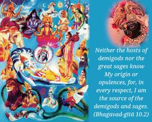
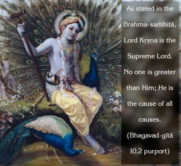
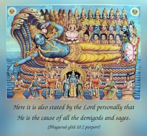
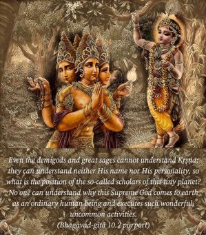

Neither the hosts of demigods nor the great sages know My origin or opulences, for, in every respect, I am the source of the demigods and sages.




As stated in the Brahma-saṁhitā, Lord Kṛṣṇa is the Supreme Lord. No one is greater than Him; He is the cause of all causes. Here it is also stated by the Lord personally that He is the cause of all the demigods and sages. Even the demigods and great sages cannot understand Kṛṣṇa; they can understand neither His name nor His personality, so what is the position of the so-called scholars of this tiny planet? No one can understand why this Supreme God comes to earth as an ordinary human being and executes such wonderful, uncommon activities. One should know, then, that scholarship is not the qualification necessary to understand Kṛṣṇa. Even the demigods and the great sages have tried to understand Kṛṣṇa by their mental speculation, and they have failed to do so. In the Śrīmad-Bhāgavatam also it is clearly said that even the great demigods are not able to understand the Supreme Personality of Godhead. They can speculate to the limits of their imperfect senses and can reach the opposite conclusion of impersonalism, of something not manifested by the three qualities of material nature, or they can imagine something by mental speculation, but it is not possible to understand Kṛṣṇa by such foolish speculation.
Here the Lord indirectly says that if anyone wants to know the Absolute Truth, “Here I am present as the Supreme Personality of Godhead. I am the Supreme.” One should know this. Although one cannot understand the inconceivable Lord who is personally present, He nonetheless exists. We can actually understand Kṛṣṇa, who is eternal, full of bliss and knowledge, simply by studying His words in Bhagavad-gītā and Śrīmad-Bhāgavatam. The conception of God as some ruling power or as the impersonal Brahman can be reached by persons who are in the inferior energy of the Lord, but the Personality of Godhead cannot be conceived unless one is in the transcendental position.
Because most men cannot understand Kṛṣṇa in His actual situation, out of His causeless mercy He descends to show favor to such speculators. Yet despite the Supreme Lord’s uncommon activities, these speculators, due to contamination in the material energy, still think that the impersonal Brahman is the Supreme. Only the devotees who are fully surrendered unto the Supreme Lord can understand, by the grace of the Supreme Personality, that He is Kṛṣṇa. The devotees of the Lord do not bother about the impersonal Brahman conception of God; their faith and devotion bring them to surrender immediately unto the Supreme Lord, and out of the causeless mercy of Kṛṣṇa they can understand Kṛṣṇa. No one else can understand Him. So even great sages agree: What is ātmā, what is the Supreme? It is He whom we have to worship.